Previous slide Next slide Toggle fullscreen Open presenter view
CEN429 Secure Programming · Week 14
Tigress and Diversification
CEN429 Secure Programming — Week 14
Asst. Prof. Dr. Uğur CORUH · 18.12.2026
RTEU Computer Engineering · 2026-2027 Fall
CEN429 Secure Programming · Week 14
Today's Plan (3 Hours)
Hour
Section
Topic
1
1
Source-to-source obfuscation · Tigress · license · basic flow
2
2
Transform families · week 9 mapping · transform pipeline · step-by-step example
3
3–5
Diversification · measurement · in-class flow · build pipeline (S15) · project
RTEU Computer Engineering · 2026-2027 Fall
CEN429 Secure Programming · Week 14
A Brief History — Source-to-Source Obfuscation and Diversification
1993 — Cohen: the idea of diversification (same function, different binary)1997 — Collberg et al.'s obfuscation taxonomy (the foundation of week 9)2013 — Obfuscator-LLVM : compiler-based obfuscation2010s — Tigress : source-to-source + virtualisation + diversification for C2016–17 — Banescu et al. measure resilience with Tigress+KLEE
Main rule: resilience ↔ cost ; protection is chosen in proportion to the value of the asset.
RTEU Computer Engineering · 2026-2027 Fall
CEN429 Secure Programming · Week 14
Where Does This Week Fit?
Week 9: we learned obfuscation rules by hand Week 11: whitebox for the keyThis week (14): applying the same rules with a tool, automatically , and diversified → Tigress
All three form a whole; today is the automation step.
RTEU Computer Engineering · 2026-2027 Fall
CEN429 Secure Programming · Week 14
Learning Outcome
This week is about LO.3 (binary application protections).
By the end, you will be able to:
Explain source-to-source obfuscation
Describe how to set up a transform pipeline
Diversify and measure obfuscationPut obfuscation into the build pipeline (S15)
RTEU Computer Engineering · 2026-2027 Fall
CEN429 Secure Programming · Week 14
A Reminder from the Start
Week 9's main rule still applies this week:
Obfuscation does not grant unbreakability, it raises cost .
Tigress is not magic ; it automates what we did by hand and makes diversification easier.
RTEU Computer Engineering · 2026-2027 Fall
CEN429 Secure Programming · Week 14
What We Bring from Earlier Weeks
Source code, compiler, binary — a human-written program text turned into an executable binary by a compiler (Week 9) Code obfuscation — a countermeasure that makes code hard for a human to understand without changing its behaviour, raising the attacker's cost (Week 9) Week 9's obfuscation rules (K-01–K-12) — manually applied rules such as opaque predicates, arithmetic encoding, control-flow flattening, string encoding, variable splitting, virtualization; this week we map these one by one to Tigress's transforms (Week 9) CFG (control-flow graph) — a diagram where basic blocks are nodes and transitions are edges (Week 9) Symbolic execution — an automatic analysis method that solves program paths as mathematical constraints (e.g. KLEE) (Week 9) Diversification — producing binaries that are behaviourally equivalent but structurally different from the same source; this week we automate it with Tigress's --Seed flag (Week 9) CI and build pipeline — a system that runs automatic build/test steps on every code change (Week 4) Version identity and digest (hash) value — a record showing which binary/source/digest triple a piece of software was distributed with; this week we add a seed field to it too (Week 1)
RTEU Computer Engineering · 2026-2027 Fall
CEN429 Secure Programming · Week 14
This Week's Concepts
Each term is defined once, where it first appears in the body; here we only mark where .
Concept
Where
Source-to-source obfuscation, Tigress and its licence
Section 1
Transform (--Transform) and targeting (--Functions)
Section 1
Transform families and the week 9 mapping
Section 2
Transform pipeline and the step-by-step cost increase
Section 2
Diversification tool: seed (--Seed)
Section 3
Measuring obfuscation and diversification
Section 3
The seven-step in-class flow
Section 4
S15 build and deployment pipeline, term project
Section 5
RTEU Computer Engineering · 2026-2027 Fall
CEN429 Secure Programming · Week 14
Source-to-Source
Input: C source. Output: C source again — but obfuscated.
It is then compiled with your normal compiler.
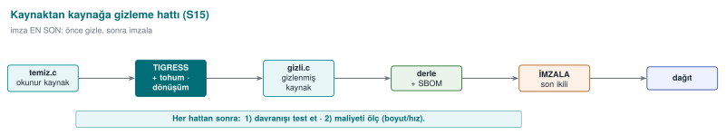
RTEU Computer Engineering · 2026-2027 Fall
CEN429 Secure Programming · Week 14
Transform: a single obfuscation operation applied to the source (e.g., flattening).The tool offers many transforms; you choose which one, and where.
RTEU Computer Engineering · 2026-2027 Fall
CEN429 Secure Programming · Week 14
Pipeline: applying several transforms in sequence .Each transform is applied to the output of the previous one.
Order matters.
RTEU Computer Engineering · 2026-2027 Fall
CEN429 Secure Programming · Week 14
What Is a Seed?
Seed: a starting number that governs randomness.Same transform + different seed = different obfuscated output.
This is the key to diversification.
RTEU Computer Engineering · 2026-2027 Fall
CEN429 Secure Programming · Week 14
What Is a CLI (Command Line)?
CLI (Command-Line Interface): an interface where you run things by typing commands.Tigress is a CLI tool: tigress --Transform=... dosya.c.
RTEU Computer Engineering · 2026-2027 Fall
CEN429 Secure Programming · Week 14
Unit Test
Unit test: a small test that automatically checks that a function works correctly.The same tests must pass after obfuscation (behaviour must be preserved).
RTEU Computer Engineering · 2026-2027 Fall
CEN429 Secure Programming · Week 14
1. Source-to-Source Obfuscation and Tigress
RTEU Computer Engineering · 2026-2027 Fall
CEN429 Secure Programming · Week 14
Three Problems with Manual Obfuscation
In week 9 we applied the rules by hand . It was instructive, but:
Error-prone — can break behaviourHard to maintain — the source becomes unreadableCannot be diversified — you cannot differentiate every copy by hand
RTEU Computer Engineering · 2026-2027 Fall
CEN429 Secure Programming · Week 14
Let a tool do the obfuscation.
You keep the readable source.
Obfuscation becomes an automatic step in the build pipeline.
RTEU Computer Engineering · 2026-2027 Fall
CEN429 Secure Programming · Week 14
The Source-to-Source Idea
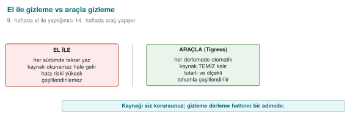
The maintenance cost stays with the readable source ; the distributed source is obfuscated.
RTEU Computer Engineering · 2026-2027 Fall
CEN429 Secure Programming · Week 14
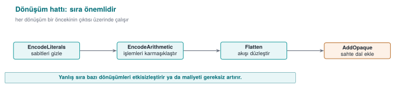
RTEU Computer Engineering · 2026-2027 Fall
CEN429 Secure Programming · Week 14
What Is Tigress?
A source-to-source C obfuscator/diversifier developed by Collberg and his team at the University of Arizona.
The automatic counterpart of week 9's manual rules.
RTEU Computer Engineering · 2026-2027 Fall
CEN429 Secure Programming · Week 14
Tigress · Features
Cross-platform: Linux, macOS, Windows, Android
Architectures: Intel, ARM, WebAssembly
Compilers: GCC, Clang, MSVC
Current version: v4
RTEU Computer Engineering · 2026-2027 Fall
CEN429 Secure Programming · Week 14
⚠️ License (Important)
Non-profit (academic/research) use: free .Commercial use: requires a license from the University of Arizona.The source code is not open; researchers may request access to an encrypted source.
RTEU Computer Engineering · 2026-2027 Fall
CEN429 Secure Programming · Week 14
⚠️ Rule for Use in Class
The Tigress binary or an old version is not distributed in class.
Students download the current version themselves from the official site (tigress.wtf).
They verify the license terms there .
You apply it only to your own code, on your own machine.
RTEU Computer Engineering · 2026-2027 Fall
CEN429 Secure Programming · Week 14
By Hand (Week 9)
With a Tool (Tigress)
Instructive
Scales
Error-prone
Preserves behaviour (tested)
Source becomes unreadable
Readable source stays with you
RTEU Computer Engineering · 2026-2027 Fall
CEN429 Secure Programming · Week 14
By Hand
With a Tool
Diversification isn't feasible by hand
Automatic via seed
Uniform, recognisable
Varies with transform+seed
RTEU Computer Engineering · 2026-2027 Fall
CEN429 Secure Programming · Week 14
Tigress also does not grant unbreakability, it raises cost.
The patterns of a well-known tool can become recognisable over time.
That's why diversification and layered defence (RASP, server) are still essential.
RTEU Computer Engineering · 2026-2027 Fall
CEN429 Secure Programming · Week 14
tigress --Transform=Flatten --Functions=erisim_ver \
--out=gizli.c temiz.c
cc -o program gizli.c
RTEU Computer Engineering · 2026-2027 Fall
CEN429 Secure Programming · Week 14
Basic Flow · Three Ideas
--Transform=...--Functions=...The output is C again; you compile it with your own compiler
RTEU Computer Engineering · 2026-2027 Fall
CEN429 Secure Programming · Week 14
Why Do We Target with --Functions?
If obfuscation is applied to every function, the program slows down/bloats a lot .
We target only sensitive functions (license, key derivation, integrity).
This is the tool's version of week 9's "cost rule."
RTEU Computer Engineering · 2026-2027 Fall
CEN429 Secure Programming · Week 14
"Should I Obfuscate This Function?" — 1
Question 1: Is this function sensitive? (license, key, integrity, check)
No → don't obfuscate; don't waste the cost.Yes → continue.
RTEU Computer Engineering · 2026-2027 Fall
CEN429 Secure Programming · Week 14
"Should I Obfuscate This Function?" — 2
Question 2: Is its value high?
Medium → EncodeLiterals + EncodeArithmetic + Flatten + AddOpaque.High and small → the above + Virtualize.
RTEU Computer Engineering · 2026-2027 Fall
CEN429 Secure Programming · Week 14
"Should I Obfuscate This Function?" — 3
Question 3: In every case:
Diversify (seed)
Measure (size, time, blocks)
Verify behaviour with unit tests
Write it into S9/S15
RTEU Computer Engineering · 2026-2027 Fall
CEN429 Secure Programming · Week 14
Decision Flow · At a Glance
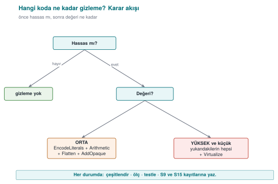
RTEU Computer Engineering · 2026-2027 Fall
CEN429 Secure Programming · Week 14
Section 1 — Quick Check
What is source-to-source obfuscation?
Three advantages over manual obfuscation?
Why isn't Tigress distributed in class?
RTEU Computer Engineering · 2026-2027 Fall
CEN429 Secure Programming · Week 14
Section 1 — Answers
A transform is applied to the source code, producing new source (still C) , which is then compiled normally. Tigress takes C, gives obfuscated C.
Repeatable/automatic (every build), consistent and scalable (many functions), the original source stays clean + diversification via seed.License/terms of use ; everyone downloads it themselves. If Tigress isn't available, demos work with a clean derivative/fallback .
RTEU Computer Engineering · 2026-2027 Fall
CEN429 Secure Programming · Week 14
RTEU Computer Engineering · 2026-2027 Fall
CEN429 Secure Programming · Week 14
Tigress transforms correspond to the obfuscation families we saw in week 9 (K-01–K-12).
Let's look at them group by group; we'll tie each one to a K-rule.
RTEU Computer Engineering · 2026-2027 Fall
CEN429 Secure Programming · Week 14
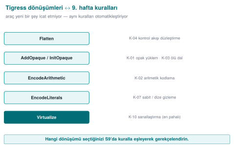
RTEU Computer Engineering · 2026-2027 Fall
CEN429 Secure Programming · Week 14
Flatten: flattens control flow → K-04 InitOpaque / AddOpaque / UpdateOpaque: opaque predicate + bogus branch → K-01, K-03 Order: InitOpaque first, then AddOpaque .
RTEU Computer Engineering · 2026-2027 Fall
CEN429 Secure Programming · Week 14
EncodeArithmetic: arithmetic into an equivalent complex expression (MBA) → K-02 EncodeLiterals: encodes constants and strings (cheap, applied almost always) → K-07, K-08 EncodeData: encodes variable representation → K-09
RTEU Computer Engineering · 2026-2027 Fall
CEN429 Secure Programming · Week 14
Split / Merge: splits/merges functions → K-06 Virtualize: turns the function into custom VM bytecode → K-10 Jit: generates code at run time; use carefully alongside OS protections → K-12 (dynamic)
RTEU Computer Engineering · 2026-2027 Fall
CEN429 Secure Programming · Week 14
AntiBranchAnalysis / AntiAliasAnalysis / AntiTaintAnalysis: make static analysis techniques harder → preventive family
RTEU Computer Engineering · 2026-2027 Fall
CEN429 Secure Programming · Week 14
RandomFuns: random bogus functionsRndArgs: bogus parametersCombined with a seed, every build differs → diversification, K-06
RTEU Computer Engineering · 2026-2027 Fall
CEN429 Secure Programming · Week 14
Diversification in Space/Time — Diagram
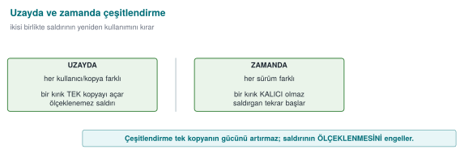
RTEU Computer Engineering · 2026-2027 Fall
CEN429 Secure Programming · Week 14
Tigress
What It Does
Week 9
Flatten
Flattening
K-04
AddOpaque
Opaque predicate/bogus
K-01, K-03
EncodeArithmetic
Arithmetic encoding
K-02
EncodeLiterals
Constant/string
K-07, K-08
Virtualize
Virtualisation
K-10
RandomFuns/RndArgs
Diversification
K-06
RTEU Computer Engineering · 2026-2027 Fall
CEN429 Secure Programming · Week 14
Families and Cost
Cheap: EncodeArithmetic, EncodeLiteralsModerate: Flatten, opaque predicatesExpensive: Virtualize (tens of times slower)
That's why Virtualize is targeted only at small, critical functions; via --Functions.
RTEU Computer Engineering · 2026-2027 Fall
CEN429 Secure Programming · Week 14
RTEU Computer Engineering · 2026-2027 Fall
CEN429 Secure Programming · Week 14
"Not One Technique, Together"
Week 9's most important rule.
In Tigress, this means applying transforms in sequence .
RTEU Computer Engineering · 2026-2027 Fall
CEN429 Secure Programming · Week 14
Conceptual Pipeline
tigress \
--Transform=EncodeLiterals --Functions=erisim_ver \
--Transform=EncodeArithmetic --Functions=erisim_ver \
--Transform=Flatten --Functions=erisim_ver \
--Transform=AddOpaque --Functions=erisim_ver \
--out=gizli.c temiz.c
RTEU Computer Engineering · 2026-2027 Fall
CEN429 Secure Programming · Week 14
What Does the Pipeline Do?
The single check (erisim_ver):
Encode constants/strings
Encode its arithmetic
Flatten
Strengthen with opaque predicates
= the automatic version of what week 9's K-04 called "strengthened flattening."
RTEU Computer Engineering · 2026-2027 Fall
CEN429 Secure Programming · Week 14
⚠️ Order and Testing Rule
Transform order affects the result; some orders needlessly hurt performance.
Rule: after every pipeline, run the unit tests (was behaviour preserved?) and measure size/speed.Obfuscation must never change behaviour; if it does, the pipeline is wrong.
This connects to week 12's "S16 results."
RTEU Computer Engineering · 2026-2027 Fall
CEN429 Secure Programming · Week 14
Step-by-Step Example
RTEU Computer Engineering · 2026-2027 Fall
CEN429 Secure Programming · Week 14
Step-by-Step Strengthening — Diagram
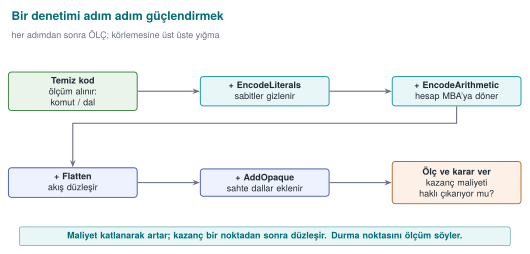
RTEU Computer Engineering · 2026-2027 Fall
CEN429 Secure Programming · Week 14
Starting Point · temiz.c
int erisim_ver (const char *jeton) {
if (jeton_gecerli(jeton)) return IZIN;
return RED;
}
Unprotected: a single branch, bypassed with strings and a single-byte patch.
RTEU Computer Engineering · 2026-2027 Fall
CEN429 Secure Programming · Week 14
Step 0 · The Attacker
strings → IZIN/REDReverse-compile → a single if
Turn the failure branch into success
Time: minutes.
RTEU Computer Engineering · 2026-2027 Fall
CEN429 Secure Programming · Week 14
Layer by Layer
Step
Transform
What Changes
Cost
0
—
Bypassed with a single-byte patch
—
1
EncodeLiterals
IZIN/RED no longer plain
Very low
2
EncodeArithmetic
Comparison complex
Low
3
Flatten
Single branch not visible
Moderate
4
AddOpaque
Bogus branches
Moderate
5
Virtualize (if needed)
VM bytecode
High
RTEU Computer Engineering · 2026-2027 Fall
CEN429 Secure Programming · Week 14
Takeaway
Every step makes the attack a bit more expensive .
Every step adds a cost .
Where you stop: asset value + the cost you measured .
Step 5 (Virtualize) is unnecessary for most checks.
RTEU Computer Engineering · 2026-2027 Fall
CEN429 Secure Programming · Week 14
This Table → S9 Itself
This "step / transform / what changes / cost" table
is the direct counterpart of your project's S9 protection table .
RTEU Computer Engineering · 2026-2027 Fall
CEN429 Secure Programming · Week 14
O-LLVM (Compiler-Based)
Obfuscator-LLVM: applies transforms at compile time .Not source-to-source; on top of the LLVM intermediate representation.
Week 9 K-11. An alternative to Tigress.
RTEU Computer Engineering · 2026-2027 Fall
CEN429 Secure Programming · Week 14
Tigress or O-LLVM?
Tigress
O-LLVM
Where
Source (C→C)
Compiler (IR)
Visibility
You can see the obfuscated source
A build step
Transform richness
Many (including Virtualize)
More limited
RTEU Computer Engineering · 2026-2027 Fall
CEN429 Secure Programming · Week 14
Shared Limit
Both are well known → their patterns can become recognisable.
Both require diversification and layered defence .
Neither one grants unbreakability.
RTEU Computer Engineering · 2026-2027 Fall
CEN429 Secure Programming · Week 14
Section 2 — Quick Check
Which K-rules do Flatten, EncodeArithmetic, Virtualize correspond to?
Why do you target with --Functions?
Two things you must always do after every pipeline?
RTEU Computer Engineering · 2026-2027 Fall
CEN429 Secure Programming · Week 14
Section 2 — Answers
Flatten = control-flow flattening; EncodeArithmetic = arithmetic/data obfuscation; Virtualize = virtualisation (strongest, most expensive).Obfuscating every function blows up cost/performance; targeting only sensitive functions concentrates resilience there.
(1) Test behaviour (unit tests must pass), (2) measure cost (size/speed/instruction count, before-after).
RTEU Computer Engineering · 2026-2027 Fall
CEN429 Secure Programming · Week 14
3. Diversification and Measurement
RTEU Computer Engineering · 2026-2027 Fall
CEN429 Secure Programming · Week 14
Recall Rule 2
An attack that works on one copy should not work on all copies.
If an attacker can crack one copy and distribute the patch to everyone , one crack opens every door.
RTEU Computer Engineering · 2026-2027 Fall
CEN429 Secure Programming · Week 14
What Is Diversification?
Behaviourally equivalent, structurally different binaries from the same source.
Tigress does this with a seed :
Same transforms + a different seed → opaque predicates, bogus branches, state values change .
RTEU Computer Engineering · 2026-2027 Fall
CEN429 Secure Programming · Week 14
Two Seeds, Two Different Binaries
tigress --Seed=1001 --Transform=Flatten --Transform=AddOpaque \
--Functions=erisim_ver --out=gizli_a.c temiz.c
tigress --Seed=2002 --Transform=Flatten --Transform=AddOpaque \
--Functions=erisim_ver --out=gizli_b.c temiz.c
gizli_a and gizli_b do the same job; their machine code is different .
RTEU Computer Engineering · 2026-2027 Fall
CEN429 Secure Programming · Week 14
Two Types of Diversification
In space: a differently seeded copy for each user/device → one copy's attack doesn't work on another.In time: each version gets a new seed → an old attack breaks on the new version.
Works together with week 10's key/version renewal.
RTEU Computer Engineering · 2026-2027 Fall
CEN429 Secure Programming · Week 14
What Does Diversification Prevent?
It does not increase the strength of obfuscation (cracking one copy is still possible).
But it prevents it from scaling .
RandomFuns, RndArgs also change structure when combined with a seed.
RTEU Computer Engineering · 2026-2027 Fall
CEN429 Secure Programming · Week 14
Diversification Effectiveness · Metric
Compile the same source with two seeds.
Measure the byte difference of the protected functions.
The higher the difference, the lower the chance that one attack works on the other.
Write the metric into S9.
RTEU Computer Engineering · 2026-2027 Fall
CEN429 Secure Programming · Week 14
Measuring Obfuscation
RTEU Computer Engineering · 2026-2027 Fall
CEN429 Secure Programming · Week 14
Tigress's Teaching Value
In week 9 we learned to measure obfuscation on four dimensions (potency, resilience, stealth, cost).
Tigress lets you make these measurements concrete : obfuscate the same program, measure before/after.
RTEU Computer Engineering · 2026-2027 Fall
CEN429 Secure Programming · Week 14
Cost Measurement (Easy, Mandatory)
Measure for every pipeline and write it into S9/S15:
Metric
How
Binary size
size / ls -l
Running time
Same input, N times, average
CFG complexity
Basic block count in the decompiler
RTEU Computer Engineering · 2026-2027 Fall
CEN429 Secure Programming · Week 14
Cost Measurement · Command
size ./program_temiz ./program_gizli
Simple, but it produces evidence .
RTEU Computer Engineering · 2026-2027 Fall
CEN429 Secure Programming · Week 14
Cost · Example Table (Pipeline A and B)
Pipeline A: EncodeLiterals + EncodeArithmetic (light) · Pipeline B: Pipeline A + Flatten + AddOpaque (heavy)
Metric
Clean
Pipeline A
Pipeline B
Size
100 KB
103 KB
131 KB
Time
1.00×
1.05×
1.80×
Blocks (target fn.)
5
7
40
Sensitive strings
3
0
0
The figures are an example; you write your own measurements.
RTEU Computer Engineering · 2026-2027 Fall
CEN429 Secure Programming · Week 14
Cost · Raw Measurement Output
program_temiz:
boyut: 100 KB
işlem süresi: 1.00× (referans)
erisim_ver temel blok: 5
boyut: 103 KB (+%3)
süre: 1.05×
blok: 7
strings hassas dize: 0 (öncesi 3)
boyut: 131 KB (+%31)
süre: 1.80×
blok: 40
RTEU Computer Engineering · 2026-2027 Fall
CEN429 Secure Programming · Week 14
Resilience Measurement (Advanced, Concept)
Resilience = resistance to an automated tool (symbolic execution).
Week 9: "not a claim, a measured quantity."
Tigress is at the centre of this research.
RTEU Computer Engineering · 2026-2027 Fall
CEN429 Secure Programming · Week 14
Banescu et al. · Tigress + KLEE
A study measuring how much Tigress transforms resist symbolic execution . Findings:
A single transform (Flatten alone) → usually unwound.
Combining transforms + growing the state space → forces the solver exponentially .But cost also increases.
RTEU Computer Engineering · 2026-2027 Fall
CEN429 Secure Programming · Week 14
Resilience ↔ Cost — Diagram
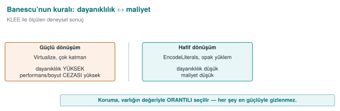
RTEU Computer Engineering · 2026-2027 Fall
CEN429 Secure Programming · Week 14
Takeaway for the Course
Resilience and cost are a trade-off (like week 9).
Don't say "strong"; say "it didn't let this tool solve a problem of this size within this time."
RTEU Computer Engineering · 2026-2027 Fall
CEN429 Secure Programming · Week 14
Measurement Rule (S9/S15)
Defend an obfuscation decision with measurements:
"The Flatten + AddOpaque pipeline grew the size by 30%, slowed the process by 1.8×; the target function's basic block count grew 8-fold."
Unmeasured obfuscation = a claim for the evaluator (week 12).
RTEU Computer Engineering · 2026-2027 Fall
CEN429 Secure Programming · Week 14
Decision
Asset value low → Pipeline A is enough.
Asset value high → Pipeline B (accept the cost) + diversification.
The decision rests on numbers, not a feeling.
RTEU Computer Engineering · 2026-2027 Fall
CEN429 Secure Programming · Week 14
Diversification Measurement (Example)
Produce Pipeline B with seed 1001 and 2002.
Byte difference of the protected function: 92% .
Comment: a patch written for one copy most likely won't work on the other.
RTEU Computer Engineering · 2026-2027 Fall
CEN429 Secure Programming · Week 14
Section 3 — Quick Check
How does a seed provide diversification?
Difference between diversification in space and in time?
Banescu et al.'s main rule? (resilience ↔ cost)
RTEU Computer Engineering · 2026-2027 Fall
CEN429 Secure Programming · Week 14
Section 3 — Answers
Obfuscating the same source with a different seed makes the tool make different random choices → every build is a different binary (same behaviour).
In space: different copies/users differ (one crack doesn't crack everyone). In time: it changes across versions (a crack doesn't stay valid).Stronger obfuscation means more resilience but more cost ; protection is chosen in proportion to the value of the asset.
RTEU Computer Engineering · 2026-2027 Fall
CEN429 Secure Programming · Week 14
4. In-Class Flow (Step by Step)
RTEU Computer Engineering · 2026-2027 Fall
CEN429 Secure Programming · Week 14
In-Class Flow — Diagram
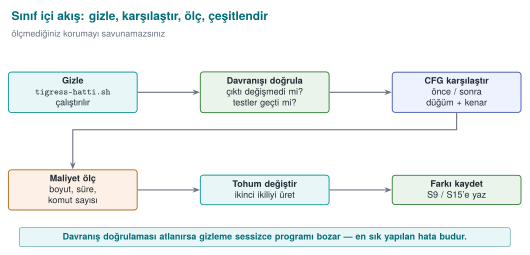
RTEU Computer Engineering · 2026-2027 Fall
CEN429 Secure Programming · Week 14
What Will We Do?
Take your own small, synthetic program:
obfuscate → verify behaviour → compare → measure → diversify → report
Let's go step by step.
RTEU Computer Engineering · 2026-2027 Fall
CEN429 Secure Programming · Week 14
Step 1 · Preparation
Write a small, synthetic program (e.g., erisim_ver).
Show with unit tests that it works correctly .
This is your "clean" baseline.
RTEU Computer Engineering · 2026-2027 Fall
CEN429 Secure Programming · Week 14
Step 2 · Obfuscate
tigress --Transform=EncodeLiterals --Transform=EncodeArithmetic \
--Transform=Flatten --Transform=AddOpaque \
--Functions=erisim_ver --out=gizli.c temiz.c
cc -o program_gizli gizli.c
Apply a transform pipeline.
RTEU Computer Engineering · 2026-2027 Fall
CEN429 Secure Programming · Week 14
Step 3 · Verify Behaviour
Run the same unit tests on the obfuscated version.
The result must be exactly the same .
If different: the pipeline is wrong → fix it.
Obfuscation never changes behaviour.
RTEU Computer Engineering · 2026-2027 Fall
CEN429 Secure Programming · Week 14
Step 4 · Compare
Open the clean and obfuscated versions in a decompiler (Ghidra/objdump).
Compare the control flow.
Note the increase in basic block count.
RTEU Computer Engineering · 2026-2027 Fall
CEN429 Secure Programming · Week 14
Step 5 · Measure
size ./program_temiz ./program_gizli
Write down the size and time difference.
RTEU Computer Engineering · 2026-2027 Fall
CEN429 Secure Programming · Week 14
Step 6 · Diversify
Run the same pipeline with two different seeds .
Show that the two binaries are different (byte difference).
tigress --Seed=1001 ... --out=gizli_a.c temiz.c
tigress --Seed=2002 ... --out=gizli_b.c temiz.c
RTEU Computer Engineering · 2026-2027 Fall
CEN429 Secure Programming · Week 14
Step 7 · Report
Put your findings into a table:
Transform
Size
Time
Blocks
Seed Difference
…
…
…
…
…
This table goes directly into S9/S15 .
RTEU Computer Engineering · 2026-2027 Fall
CEN429 Secure Programming · Week 14
⚠️ Ethical and Safe Use
Tigress only on your own code.
The example program does not harm the computer: it does not change system settings, does not touch the network.
All values are synthetic .
RTEU Computer Engineering · 2026-2027 Fall
CEN429 Secure Programming · Week 14
In-Class · Summary Flow
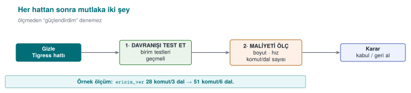
RTEU Computer Engineering · 2026-2027 Fall
CEN429 Secure Programming · Week 14
Step-by-Step Flow · Why This Order?
First behaviour (tests) — make sure nothing broke.
Then evidence (CFG, measurement) — show the gain.
Then diversification — break scalability.
Don't say "strong" without measuring.
RTEU Computer Engineering · 2026-2027 Fall
CEN429 Secure Programming · Week 14
New Example · Integrity Check
int dosya_saglam (const uint8_t *veri, size_t n,
const uint8_t *beklenen) {
uint8_t ozet[32 ];
ozet_hesapla(veri, n, ozet);
return sabit_zamanli_esit(ozet, beklenen, 32 );
}
A synthetic function that checks version integrity.
RTEU Computer Engineering · 2026-2027 Fall
CEN429 Secure Programming · Week 14
Why Obfuscate This?
An attacker wants to find this check and bypass it (to get a tampered file to pass).
The check's return point and comparison are the target.
Week 9: opaque boolean + random exit are critical here.
RTEU Computer Engineering · 2026-2027 Fall
CEN429 Secure Programming · Week 14
Pipeline Choice
tigress \
--Transform=EncodeLiterals \
--Transform=EncodeArithmetic \
--Transform=Flatten \
--Transform=AddOpaque \
--Functions=dosya_saglam \
--out=gizli.c temiz.c
RTEU Computer Engineering · 2026-2027 Fall
CEN429 Secure Programming · Week 14
Step by Step · What Happens?
EncodeLiterals: 32 and any strings are no longer plain.
EncodeArithmetic: the comparison becomes complex.
Flatten: the single return point is not visible.
AddOpaque: bogus branches; the "success" branch isn't in one place.
RTEU Computer Engineering · 2026-2027 Fall
CEN429 Secure Programming · Week 14
Behaviour Verification (Mandatory)
A file with the correct hash → passes .
A file with a corrupted hash → rejected .
The obfuscated version gives the same result → pipeline correct.
RTEU Computer Engineering · 2026-2027 Fall
CEN429 Secure Programming · Week 14
CFG Before/After (Concept)
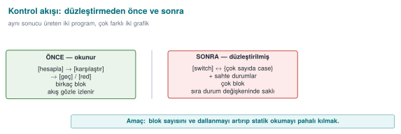
Where the check passes/fails can no longer be read from the flow.
RTEU Computer Engineering · 2026-2027 Fall
CEN429 Secure Programming · Week 14
⚠️ Constant-Time Behaviour Must Be Preserved
Even obfuscated, sabit_zamanli_esit must stay constant time .
If an early exit is added for the sake of obfuscation, a side channel opens (week 3).
Test that the transforms don't break this.
RTEU Computer Engineering · 2026-2027 Fall
CEN429 Secure Programming · Week 14
Measurement (Example)
Metric
Before
After
Size
100 KB
128 KB
Time
1.0×
1.7×
Blocks (dosya_saglam)
4
33
RTEU Computer Engineering · 2026-2027 Fall
CEN429 Secure Programming · Week 14
Diversification
Produce with two seeds → two different binaries.
A "skip the integrity check" patch that works on one copy won't work on the other, even if it succeeds once.
RTEU Computer Engineering · 2026-2027 Fall
CEN429 Secure Programming · Week 14
Second Example · Takeaway
Obfuscation is valuable on functions that are a bypass target , like integrity checks.
But the real strength: obfuscation + RASP (week 6) + server-side checking.
Obfuscation alone delays bypass, it doesn't prevent it.
RTEU Computer Engineering · 2026-2027 Fall
CEN429 Secure Programming · Week 14
Section 4 — Quick Check
The first thing you must always do after obfuscating?
How do you show diversification?
Which project sections does the report table go into?
RTEU Computer Engineering · 2026-2027 Fall
CEN429 Secure Programming · Week 14
Section 4 — Answers
Test that behaviour hasn't changed (unit tests must pass); obfuscation must not break function.Produce with two different seeds; compare the binaries (hash/size/instructions differ ) but same input → same output (diff/objdump).
S9 (code hardening) and S15 (build/deployment pipeline); before/after measurement as evidence.
RTEU Computer Engineering · 2026-2027 Fall
CEN429 Secure Programming · Week 14
5. Build Pipeline (S15) and Project
RTEU Computer Engineering · 2026-2027 Fall
CEN429 Secure Programming · Week 14
Obfuscation Is Not "By Hand at the End"
Obfuscation should be a step in the build pipeline .
Your project's S15 section, after the midterm, documents exactly this.
RTEU Computer Engineering · 2026-2027 Fall
CEN429 Secure Programming · Week 14
Build Pipeline — Diagram
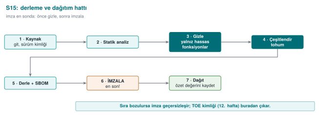
RTEU Computer Engineering · 2026-2027 Fall
CEN429 Secure Programming · Week 14
Pipeline Rule 1 · Sensitive Functions Only
Obfuscate only sensitive functions with --Functions.
Write down the rationale (which function, why).
The cost rule (week 9).
RTEU Computer Engineering · 2026-2027 Fall
CEN429 Secure Programming · Week 14
Pipeline Rule 2 · Every Version Is Diversified
Every version is diversified with a seed .
The seed and build identity are recorded .
Diversification in time (section 3).
RTEU Computer Engineering · 2026-2027 Fall
CEN429 Secure Programming · Week 14
Pipeline Rule 3 · Signing After Obfuscation
First obfuscate, then sign.
The build identity and hash values (week 12's TOE) must be consistent .
Why afterwards? The signature must cover the final distributed binary.
RTEU Computer Engineering · 2026-2027 Fall
CEN429 Secure Programming · Week 14
Pipeline Rule 4 · Automatic in CI
The pipeline runs in continuous integration (CI).
Every version: unit tests + size/speed measurement automatic .
If behaviour breaks, the build stops .
RTEU Computer Engineering · 2026-2027 Fall
CEN429 Secure Programming · Week 14
9, 11, 14 Together
9: obfuscation rules (code)11: whitebox (key)14: automation + diversification (this week)
Common rule: protection = delay ; strength comes from layers and measurement.
RTEU Computer Engineering · 2026-2027 Fall
CEN429 Secure Programming · Week 14
Project · S9 Extended + S15 Pipeline — 1
1. Transform pipeline (S9): which functions, which transforms, in what order, why .
RTEU Computer Engineering · 2026-2027 Fall
CEN429 Secure Programming · Week 14
Project · S9 + S15 — 2
2. Measurement table: size, time, (if available) block count — before/after.
RTEU Computer Engineering · 2026-2027 Fall
CEN429 Secure Programming · Week 14
Project · S9 + S15 — 3
3. Diversification: production with two seeds + a difference metric; if you won't apply it, a rationale .
RTEU Computer Engineering · 2026-2027 Fall
CEN429 Secure Programming · Week 14
Project · S9 + S15 — 4, 5
4. S15 pipeline: document the obfuscation + signing + build identity steps with a diagram .
5. Behaviour evidence: show that the obfuscated version passes the unit tests (the S16 link).
RTEU Computer Engineering · 2026-2027 Fall
CEN429 Secure Programming · Week 14
Through the Evaluator's Eyes
Not "I used a lot of transforms."
A rationale and a measurement for every transform. Unmeasured obfuscation = a claim (week 12).
RTEU Computer Engineering · 2026-2027 Fall
CEN429 Secure Programming · Week 14
Case · Setup
A synthetic application has a license check and a key derivation function.
Should we heavily obfuscate both?
RTEU Computer Engineering · 2026-2027 Fall
CEN429 Secure Programming · Week 14
Case · Decision
License check: medium value → Pipeline B (Flatten + AddOpaque).Key derivation: high value → Pipeline B + Virtualize (acceptable cost because it's small).The rest: not obfuscated (unnecessary cost).
RTEU Computer Engineering · 2026-2027 Fall
CEN429 Secure Programming · Week 14
Case · Diversification + Pipeline
Each version, a different seed.
Build pipeline: obfuscate → sign → build identity.
Unit tests + measurement automatic in CI.
RTEU Computer Engineering · 2026-2027 Fall
CEN429 Secure Programming · Week 14
Case · S9/S15 Output
Function
Pipeline
Size/Time
Rationale
lisans_dogrula
B
+31% / 1.8×
medium value
anahtar_turet
B+Virtualize
+60% / 3×
high value, small fn.
RTEU Computer Engineering · 2026-2027 Fall
CEN429 Secure Programming · Week 14
Case · Residual Risk
A sufficiently determined attacker can still solve a single copy.
Mitigation: diversification + a short-lived key + server-side checking.
Written down explicitly.
RTEU Computer Engineering · 2026-2027 Fall
CEN429 Secure Programming · Week 14
Section 5 — Quick Check
Why is signing after obfuscation?
The rationale for the "sensitive functions only" rule?
The steps of the S15 pipeline?
RTEU Computer Engineering · 2026-2027 Fall
CEN429 Secure Programming · Week 14
Section 5 — Answers
The signature protects the final binary ; if you sign first and obfuscate afterwards, the binary changes → the signature becomes invalid. Order: build → obfuscate → sign .
Obfuscating everything blows up performance/size and most code isn't sensitive; concentrate protection on critical functions → low cost, high impact.
Source → (static analysis) → build → obfuscate → diversify (seed) → package/SBOM → sign → deploy (all recorded in CI).
RTEU Computer Engineering · 2026-2027 Fall
CEN429 Secure Programming · Week 14
Solved Self-Check
RTEU Computer Engineering · 2026-2027 Fall
CEN429 Secure Programming · Week 14
Question 1
What is source-to-source obfuscation? Three advantages over manual obfuscation?
Answer: A tool takes C source and produces obfuscated C source. Advantages: preserves behaviour (error-resistant), the readable source stays with you, easy diversification via seed.
RTEU Computer Engineering · 2026-2027 Fall
CEN429 Secure Programming · Week 14
Question 2
Tigress's place in the course; which license, why isn't it distributed in class?
Answer: The automatic form of week 9's rules. Non-profit use is free, commercial needs an Arizona license. The source is closed → its binary is not distributed in class; students download it from the official site.
RTEU Computer Engineering · 2026-2027 Fall
CEN429 Secure Programming · Week 14
Question 3
Map these transforms to week 9's rules: Flatten, EncodeArithmetic, EncodeLiterals, Virtualize, AddOpaque.
Answer: Flatten→K-04, EncodeArithmetic→K-02, EncodeLiterals→K-07/K-08, Virtualize→K-10, AddOpaque→K-01/K-03.
RTEU Computer Engineering · 2026-2027 Fall
CEN429 Secure Programming · Week 14
Question 4
Why is a transform pipeline stronger than a single transform? Why does order matter?
Answer: Layers strengthen each other (week 9's "together"). Order affects the result and performance; some orders needlessly slow things down or give a weak result.
RTEU Computer Engineering · 2026-2027 Fall
CEN429 Secure Programming · Week 14
Question 5
Which two things do you always do after every transform pipeline?
Answer: (1) Run the unit tests (was behaviour preserved?), (2) measure size/speed (cost).
RTEU Computer Engineering · 2026-2027 Fall
CEN429 Secure Programming · Week 14
Question 6
Why is Virtualize applied only to small and critical functions?
Answer: Its cost is very high (tens of times slower, size). The benefit only justifies the cost for the most valuable, small functions.
RTEU Computer Engineering · 2026-2027 Fall
CEN429 Secure Programming · Week 14
Question 7
How does the seed (--Seed) provide diversification? Difference in space/time?
Answer: A different seed → different opaque predicate/bogus branch/state. In space: different copies at the same time. In time: each version gets a new seed.
RTEU Computer Engineering · 2026-2027 Fall
CEN429 Secure Programming · Week 14
Question 8
Does diversification prevent the strength of obfuscation, or its scalability?
Answer: It does not increase strength (one copy can still be cracked); it prevents scalability — one crack doesn't open every door.
RTEU Computer Engineering · 2026-2027 Fall
CEN429 Secure Programming · Week 14
Question 9
The main rule for the course from the Banescu et al. study?
Answer: Resilience is a measured quantity. Combining transforms forces symbolic execution exponentially; but cost also increases → resilience ↔ cost trade-off .
RTEU Computer Engineering · 2026-2027 Fall
CEN429 Secure Programming · Week 14
Question 10
When putting obfuscation into the build pipeline, why does signing come after obfuscation?
Answer: The signature must cover the final distributed binary. It's obfuscated first, then signed; the build identity/hash stays consistent.
RTEU Computer Engineering · 2026-2027 Fall
CEN429 Secure Programming · Week 14
Question 11
The rationale for S15's "only sensitive functions are obfuscated" rule?
Answer: Obfuscating every function slows down/bloats the program a lot. It makes sense to take on the cost only for valuable functions.
RTEU Computer Engineering · 2026-2027 Fall
CEN429 Secure Programming · Week 14
Question 12
Write the common rule of weeks 9, 11, and 14 in one sentence.
Answer: Protection provides not unbreakability but delay ; its strength comes from combining layers , from diversification , and from being measured .
RTEU Computer Engineering · 2026-2027 Fall
CEN429 Secure Programming · Week 14
Closing · Three Weeks
9: obfuscation rules (by hand)11: whitebox (key)14: automation + diversification
All one framework: cost + layers + measurement.
RTEU Computer Engineering · 2026-2027 Fall
CEN429 Secure Programming · Week 14
Common Mistakes — Summary
Mistake
Where It Was Covered
Obfuscating everything
Section 1 (--Functions), Section 2 (cost)
Obfuscating without tests
Section 2 (order and testing rule)
Saying "strong" without measuring
Section 3 (measurement rule)
Skipping diversification
Section 3 (Rule 2)
Signing before obfuscating
Section 5 (Pipeline Rule 3)
Using an old/distributed Tigress
Section 1 (licence)
RTEU Computer Engineering · 2026-2027 Fall
CEN429 Secure Programming · Week 14
Glossary
Term
Meaning
Source-to-source
Obfuscation that takes C in and gives obfuscated C out
Transform
A single obfuscation operation
Pipeline
The ordered whole of the transforms
Seed
A number that governs randomness (diversification)
Symbolic execution
Path-solving automated analysis (KLEE)
RTEU Computer Engineering · 2026-2027 Fall
CEN429 Secure Programming · Week 14
You Want
Transform
Hide a string/constant
EncodeLiterals
Hide a calculation
EncodeArithmetic
Hide the structure
Flatten
Add bogus/opaque
AddOpaque
Hide machine code
Virtualize (expensive)
Diversify
--Seed, RandomFuns
RTEU Computer Engineering · 2026-2027 Fall
CEN429 Secure Programming · Week 14
Checklist
[ ] Only sensitive functions (--Functions)
[ ] Pipeline order makes sense (cheap to expensive)
[ ] Unit tests pass (behaviour)
[ ] Size/time/blocks measured
[ ] Diversified with two seeds
[ ] Signing after obfuscation
[ ] Written into S9/S15
RTEU Computer Engineering · 2026-2027 Fall
CEN429 Secure Programming · Week 14
Sources
The Tigress official site/worksheets (tigress.wtf) — transforms, syntax, v4, license
Collberg & Nagra, Surreptitious Software — taxonomy, measurement
Banescu et al. — Tigress + KLEE resilience measurement
Obfuscator-LLVM — a compiler-based alternative
RTEU Computer Engineering · 2026-2027 Fall
CEN429 Secure Programming · Week 14
Summary: This Week in One Sentence
Tigress applies week 9's obfuscation rules automatically and diversified ; but the rule is the same: obfuscationnot unbreakability but delay ; combine, diversify, measure .
The tool is powerful, but the decision is yours : what, why, at what cost are you obfuscating?
RTEU Computer Engineering · 2026-2027 Fall
CEN429 Secure Programming · Week 14
Next Week
Week 15 — Final Project Demonstrations (RAP2)
The semester's content is complete. The final report is expected to include this week's pipeline (S15) and measurements (S9) . Week 16: Quiz-2.
RTEU Computer Engineering · 2026-2027 Fall
Speaker note: This week Tigress automates week 9's manual obfuscation rules using source-to-source obfuscation and diversification. Main rule: obfuscation does not grant unbreakability, it raises cost; combine transforms, diversify, measure. Tigress is applied only to your own code; it is not distributed in class.
Speaker note: This week we automate week 9's manual obfuscation rules with a tool (Tigress). The main message is the same: obfuscation does not grant unbreakability, it raises cost; combine, diversify, measure.
Speaker note: Next, transform families.
Speaker note: Transform names can change slightly with the version; verify against the official documentation. We tie the concept to week 9's rules.
Speaker note: After the break, diversification and measurement.
Speaker note: Next, in-class flow, S15, project.
Speaker note: Students download Tigress themselves and apply it to their own small program. Purely defensive; protecting and measuring your own code.
Speaker note: Next, the build pipeline (S15) and the project.
Speaker note: Next, the solved self-check.
Speaker note: Have the students answer first, then reveal the answer.